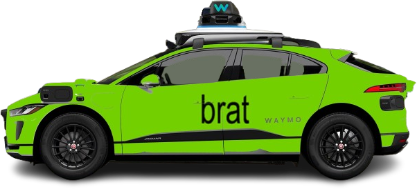

Hi,
Hey now,

I like to , , and .
I'm a Growth Hacker. In my past, I
left college, made tiktoks and joined
startups— all of which led me to SF,
where I'm now at Founders, Inc.
MSHF,
Dante Lentini
Dante Lentini